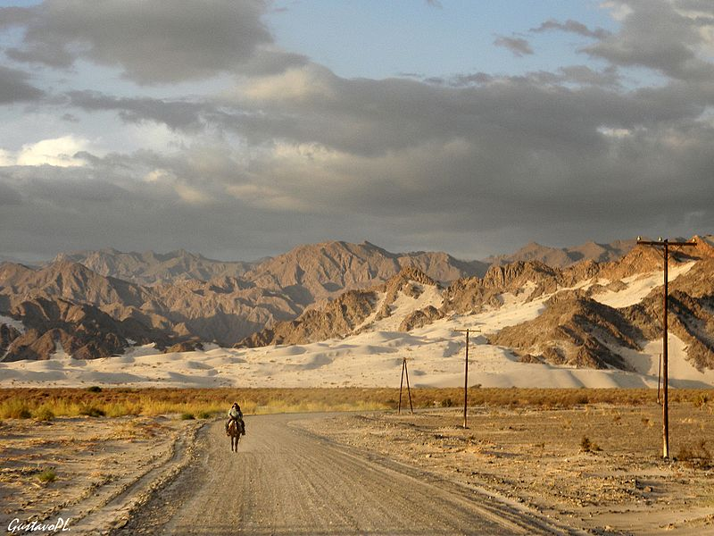

Nevado Ojos del Salado
Con 6.891 m s. n. m., es considerado el volcán activo más alto del mundo y uno de los íconos de la Puna catamarqueña.
Monte Pissis
Parte del cordón de seismiles de los Andes. Un desafío de altura y panorámicas inmensas en la frontera entre Catamarca y La Rioja.
Dunas de Tatón

Médanos gigantes y escenarios de arena ideales para fotografía, 4x4 y sandboard, en plena transición entre valle y puna.